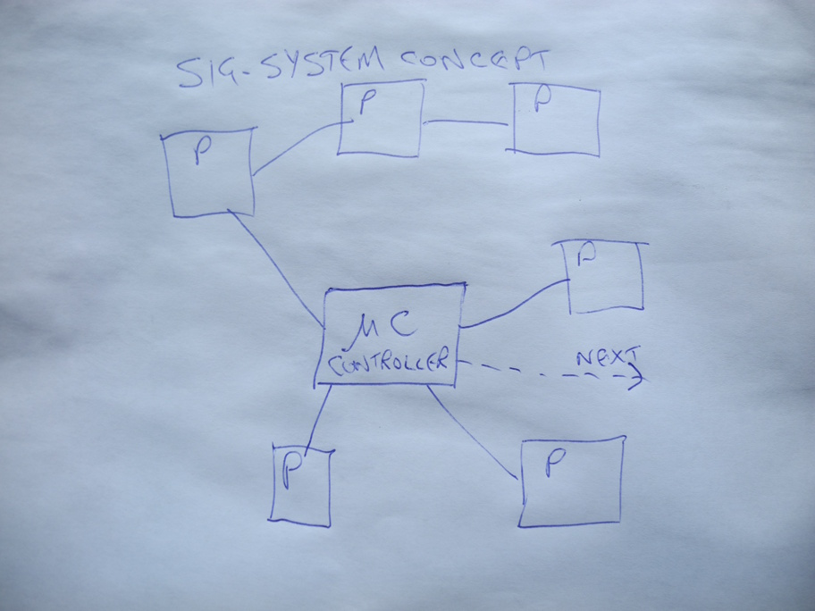
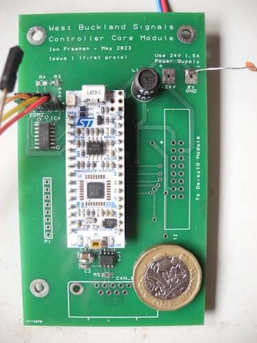
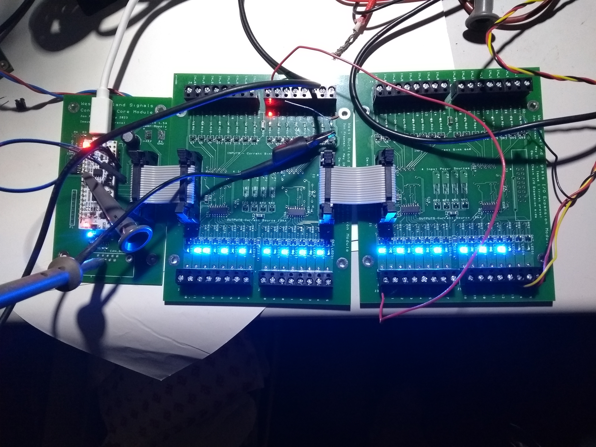
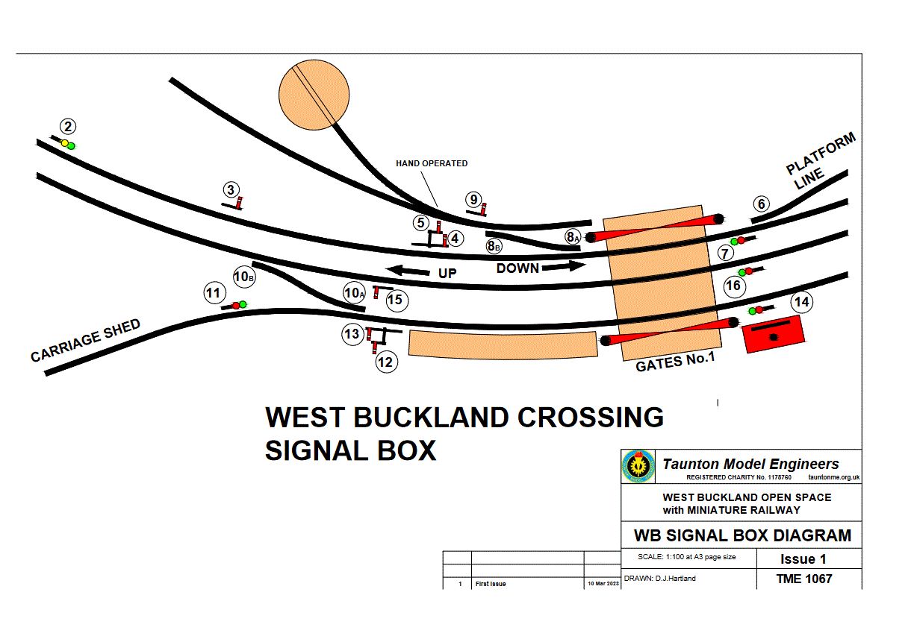
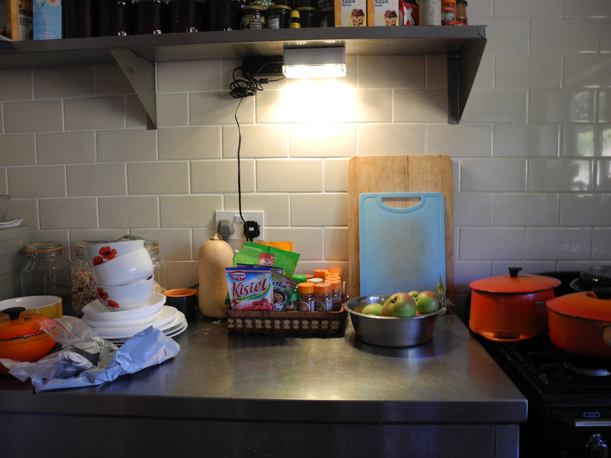

The Signalling System design uses conventional digital control system principles.
The diagram shows 'μC' microcontroller connected to any number of 'P' peripherals.
The term 'Peripherals' refers to all/any parts of the signalling system - coloured light or semaphore signals, axle detectors, motors, actuators, push buttons, level crossing gates and locks, everything.
Interconnection between system components is either by means of 'CAN bus', or hard-wiring back to centralised Input/Output Expansion modules.
The complete signalling system may consist of a number of such sub-systems linked together.
Microcontroller μC runs a section of code known as the 'Forever Loop'. It repeats this action at a regular rate, many times per second.
During each 'Forever Loop' iteration μC monitors the state of all peripherals. Should any change be detected a list of coded peripheral definitions and action plans is interrogated to find what actions, if any, are to be taken.
Peripherals are modelled in code in a style known as 'Object Oriented Programming' (OOP). Any number of, for example, coloured light signal code 'objects' may be created, each with a unique set of rules determining its behaviour. These rules get written into code after interested parties have met and thrashed out what exactly are the rules. This is thought of by signalling oldtimers as 'The Interlocking', which refers back to mechanical signal box design in Victorian times.
Changes to 'The Interlocking' of Victorian equipment is a major undertaking. Simple edits of a text file are all that's needed here.

High performance microcontrollers cost almost nothing these days.
For this design a £10 module from ST Microelectronics was chosen. This has more than enough computing power, includes a CAN bus controller, and everything needed, apart from the too few input/output connections. This is addressed by connecting In/Out Expansion module(s) designed for the purpose.
A small circuit board accommodates the microcontroller module with the few extra components needed.
ST Microelectronics provide a free kit of tools for software development, the STM32CubeIDE. This, a laptop and a USB cable complete the development setup. Programming is most easily done using the 'C' and 'C++' programming languages.
TO DO - All design and software files will be made available here.
Taunton Model Engineers were looking into designing and building a signalling system.
This thought follows from building a new miniature railway at their new site in Somerset. Five years on and it seems likely such a project may be undeliverable with resources available. At best progress is being made along geological timescales. Anyway, there may be some content of interest here.
How are we doing? Here's a progress report from April 2024 (no tangible progress since). - Signalling - A system design for Safety, Flexibility, Simplicity. Published Jan 2024, Updated Apr 2024.
These pages are to contain every detail of the design and build as it progresses, 'Open Sourcing' offers the hope that others will be able to inspect and understand all aspects of the design and construction, and to get involved themselves.
Update April 2025 -
Work on new Dual Lamp Signal Head is now complete - see 'LED Signals'
Update March 2024 -
The West Buckland site remains a mud-fest, meaning progress installing hard signalling infrastucture lags behind the detailed electronic and software system design, now nearing completion. Controllers, LED signals and communication networks have been designed, built and tested, seen to be working "on the bench".
Work continues in other technical areas including actuation methods and train detection sub-systems.
From the outset, development of the signalling system has been guided by three Cardinal Objectives : -
Cost considerations, while important, will not be permitted to compromise the above.
On this scale a railway signalling system may be modelled as a simple digital system incorporating multiple Boolean inputs and outputs. This has been implemented using a number of low-cost, British designed ARM Cortex 32 bit microcontrollers from S T Microelectronics. Code has been written and developed using the free "STM32CubeIDE" from S T.
Anyone aspiring to further develop or modify any of the software or firmware need only install STM32CubeIDE and find the relevant code files here. (Other software development suites and IDEs are available.)
In line with Cardinal Objectives, two methods of interconnecting system components have been provided : -
The former is best suited to the Level Crossing, where many switches and actuators are located physically close to the signal box.
CAN bus, the Controller Area Network, facilitates daisy-chaining numerous more distant nodes using the same 4 wires.
All design files of ANY type, and absolutely everything to do with the signalling system will be found here.
Latest Update March 2024. Forever a Work In Progress.


Taunton Model Engineers [web]
Ask J.F about joining the team of 'collaborators'. It's not too difficult, it goes like this :
For the basics of using 'GitHub', see loads of help and tutorials on Youtube.
